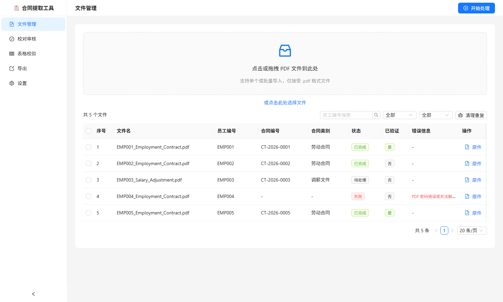

合同字段提取工具Contract Field Extractor
批量读取多语种劳动合同 PDF，自动抽取字段并在原文中高亮对应位置， 让人只需「看一眼」就能完成核对，最后导出成 Excel 台账。 Batch-reads multilingual employment-contract PDFs, extracts fields and highlights each one in the source so verification is a glance rather than a search — then exports a spreadsheet.
项目背景Background
一批多语种劳动合同需要录入员工系统。人工做法的瓶颈不在「录入」， 而在「查找」——每份合同要翻到对应条款，找出姓名、薪资、银行账号、试用期等几十个字段的位置， 然后把值抄进表格。合同的排版各不相同，同一个字段在一份里出现在第 2 页，在另一份里可能在第 7 页。 A batch of multilingual employment contracts had to be entered into an HR system. The bottleneck isn't typing — it's finding. Each contract has to be paged through to locate name, salary, bank details, probation period and dozens more. Layouts differ, so a field on page 2 in one contract might be on page 7 in another.
所以这个工具的定位很明确：把「找到」自动化，把「确认」留给人。 自动提取一定会有错，设计目标不是消除错误，而是让错误被发现的成本尽可能低。 So the tool has one clear job: automate the finding, leave the confirming to a person. Extraction will sometimes be wrong. The design goal isn't eliminating errors — it's making an error cheap to notice.
核心功能Core features
| 功能Feature | 说明What it does |
|---|---|
| 原文联动高亮Source-linked highlighting | 右侧是字段表，左侧是 PDF 原文；选中任一字段，原文中对应的位置立即高亮。核对从「翻文件」变成「看一眼」Field table on the right, source PDF on the left. Selecting a field highlights its location in the document — checking becomes a glance instead of a search |
| 批量处理Batch processing | 一次拖入多份 PDF，并发处理，逐份显示进度；加密文件单独弹出密码输入Drop in many PDFs at once, processed concurrently with per-file progress; encrypted files prompt for a password |
| 两级文本来源Two-tier text extraction | 优先读取 PDF 文字层（免费且快），只有文字层为空时才回退到 OCRReads the PDF text layer first (free and fast); falls back to OCR only when the text layer is empty |
| 分级分类Tiered classification | 先用关键词规则判断合同类型，规则判不出来时才调用模型Keyword rules classify first; the model is only called when they're inconclusive |
| 即时校验Live validation | 字段值一旦被修改就重跑校验规则，不符合预期格式的当场标出并说明期望值Editing a value re-runs the rules immediately, flagging anything unexpected and stating the expected format |
| Excel 导出Excel export | 输出带校验列的台账，有问题的单元格高亮并附批注，可直接交给下一环节Produces a ledger with validation columns — problem cells highlighted and annotated — ready to hand off |
技术架构Architecture
| 层级Layer | 选型Choice | 理由Why |
|---|---|---|
| 外壳Shell | Electron 31 | 需要读本地文件、调用外部服务、并且不经过浏览器上传——桌面应用最直接Needs local file access and outbound API calls without a browser upload step; a desktop app is the direct answer |
| 数据库Database | sql.js（内存 SQLite） | 免安装、免迁移；代价是整库驻留内存、写盘需显式导出No install, no migration; the cost is a fully in-memory database and explicit export to persist |
| PDF 渲染PDF rendering | pdf.js（Canvas） | 要拿到每个文本项在页面上的位置，才能做高亮框；这是高亮功能的前提Highlighting needs each text item's on-page position, which is what pdf.js exposes |
| 字段提取Field extraction | 大模型（OpenAI 兼容接口）LLM (OpenAI-compatible API) | 多语种、版式不固定的合同用规则抽取不现实，模型一次请求返回全部字段Rule-based extraction doesn't hold up across languages and layouts; one model call returns every field |
| 扫描件Scanned documents | OCR 服务（仅在需要时）OCR service (only when needed) | 有文字层的 PDF 直接读，避免不必要的调用成本和等待PDFs with a text layer are read directly, avoiding unnecessary cost and latency |
| 界面UI | React + Ant Design + Zustand | 表格、表单、上传这些组件用成熟库，把时间留给提取与校对逻辑Tables, forms and upload come from a mature library, leaving time for extraction and review logic |
处理链路分六步：导入 → 取文本 → 分类 → 提取 → 核对 → 导出。 每份文件独立走完这条链路，一份失败不影响其余；失败的会保留原文件与失败原因，可以单独重试。 The pipeline has six steps: import → text → classify → extract → review → export. Each file travels the chain independently, so one failure doesn't affect the rest — a failed file keeps its source and its reason, and can be retried on its own.
界面截图Screenshots


量化成果Outcomes
提取只是第一步，数据要导入内部员工管理系统，而来源不止一处—— 合同提取结果、系统导出、供应商交付三份数据需要逐条对齐。 比对表规模 3532 行 × 139 列，用 VLOOKUP、条件格式和数据透视表逐条核对： 一致的通过，不一致的回到合同原文确认后再改。 过程中另外汇总出 1584 条人员异常记录，按问题类型、字段类别、数据来源三个维度分类， 形成一份数据质量分析报告，作为后续规则调整的依据。 Extraction was only the first step — the data had to land in the internal HR system, and it arrived from three places: the extracted results, the system's own export, and a vendor delivery. All three had to be reconciled row by row across a 3532 × 139 comparison table, using VLOOKUP, conditional formatting and pivot tables: matching entries passed, mismatches went back to the contract for confirmation. The exercise also surfaced 1584 personnel data anomalies, catalogued by issue type, field category and data source into a data quality report that fed back into the rules.